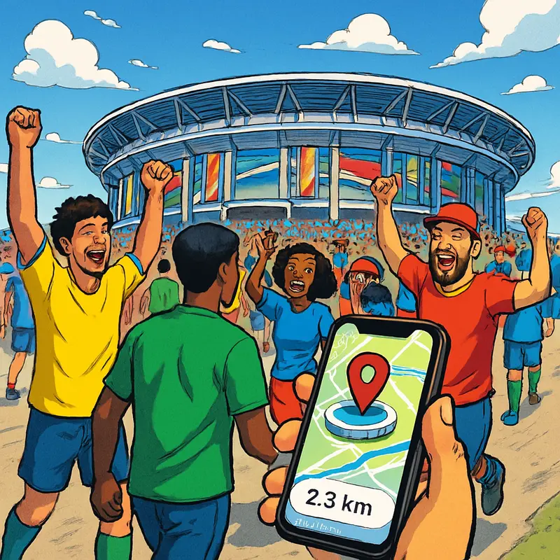
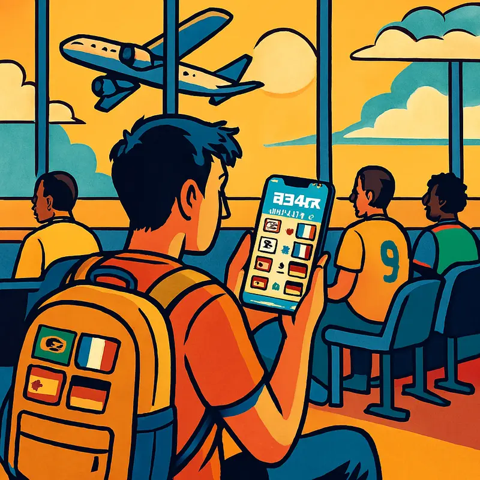
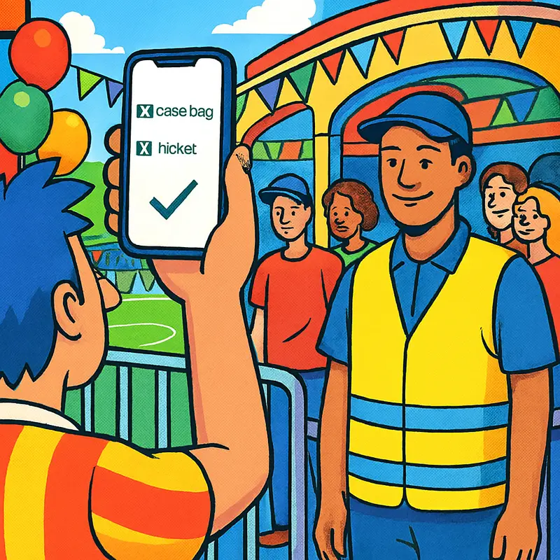
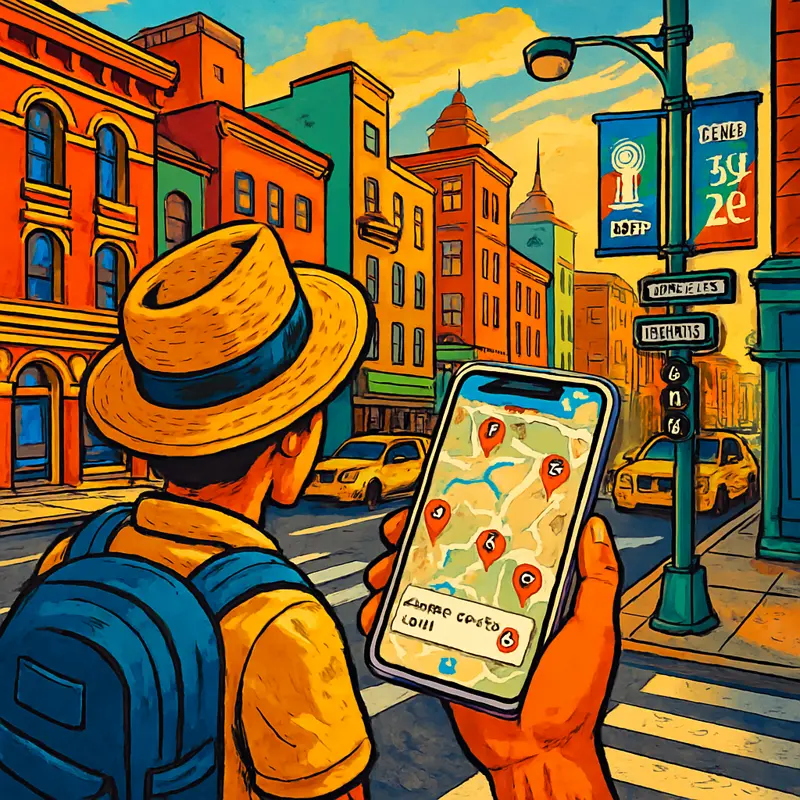
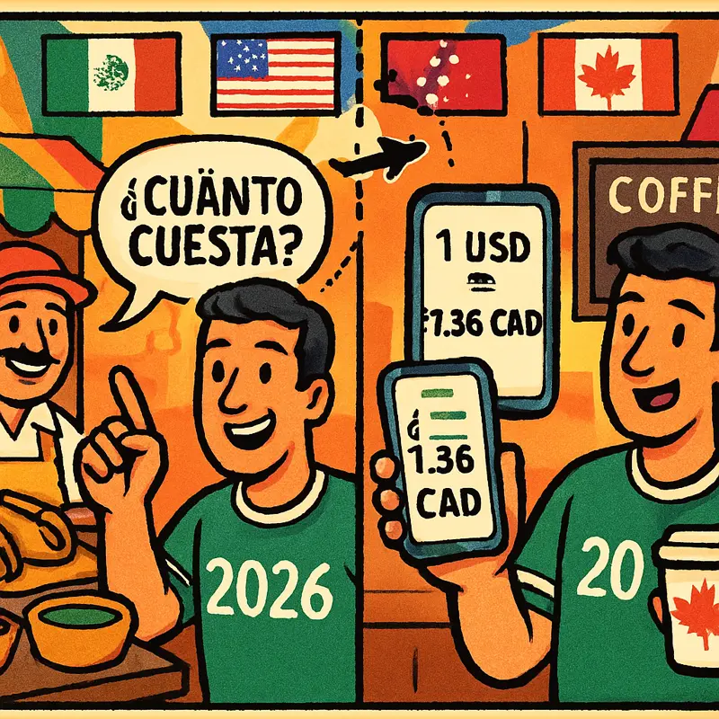

Your personal matchday guide for the 2026 World Cup.
WC26 Travel Companion puts all 104 matches, 16 stadiums across 3 countries, GPS stadium maps, match-day timelines, and essential travel tools in your pocket — working entirely offline, with zero data collection.
App Preview
Built for Every Step of Your Matchday
From planning at home to navigating a foreign city on game day — see how real fans use the app.





Everything You Need, Nothing You Don't
Eight purpose-built tools for matchday — no social feeds, no ads, no accounts.
🏟️ Full Match Schedule
All 104 matches — 72 group stage and 32 knockout rounds — with real venues, dates, and kickoff times across the USA, Mexico, and Canada.
📋 Personal Matchday Timeline
Add your tickets with gate, section, and seat info. Get a step-by-step timeline telling you when to leave, arrive, and enter the stadium.
🔔 Smart Match Reminders
Automatic local notifications — 1 day before and 2 hours before kickoff. Scheduled on-device, no server needed.
📍 GPS Stadium Finder
Near Me uses your device GPS to show your live position alongside all 16 stadiums on an interactive MapKit map with real-time distances.
🚫 Prohibited Items Guide
Categorized list of banned and allowed items at stadium security — check before you pack, not at the gate.
🆘 Emergency Contacts
Police, hospitals, and consulate numbers organized by each of the 16 host cities across three countries. One tap away.
💱 Currency & Tipping
Quick reference for USD, CAD, and MXN with local tipping customs — essential when crossing borders between host countries.
🗣️ Matchday Phrases
Essential Spanish phrases for Mexico City, Guadalajara, and Monterrey venues — transportation, food, stadium, and emergencies with pronunciation.
How It Works
Five steps from download to matchday.
Works Completely Offline
Stadium Wi-Fi is unreliable. International roaming is expensive. That's why every feature in WC26 Travel Companion works without any internet connection. Schedules, maps, timelines, emergency contacts, currency info, and phrases are all bundled in the app. Your match data is stored locally on your device using Apple's SwiftData framework. No account. No ads. No tracking. No data leaves your phone.
FAQ
Does the app require an internet connection?
No. All schedules, stadium data, maps, and tools work fully offline. Location features use on-device GPS only.
Does the app collect any personal data?
No. Zero data collection. See our Privacy Policy.
What about location data?
Location is processed on-device only to show your position on the map. It is never recorded or transmitted anywhere.
Are match times in my local timezone?
Yes. All kickoff times are stored as absolute UTC timestamps and displayed in your device's current timezone automatically.
Can I turn off notifications?
Yes. You can deny notification permission when prompted, or disable it later in iOS Settings → WC26 Travel Companion → Notifications.
What iOS version is required?
iOS 17.0 or later. The app is built with SwiftUI, SwiftData, MapKit, CoreLocation, and UserNotifications — all native Apple frameworks.
How do I contact support?
Email wangning.engineer@outlook.com. Typical response time is 24–48 hours.